Bercée par le rythme régulier des rails, une ombre tisse les fils d'un cauchemar
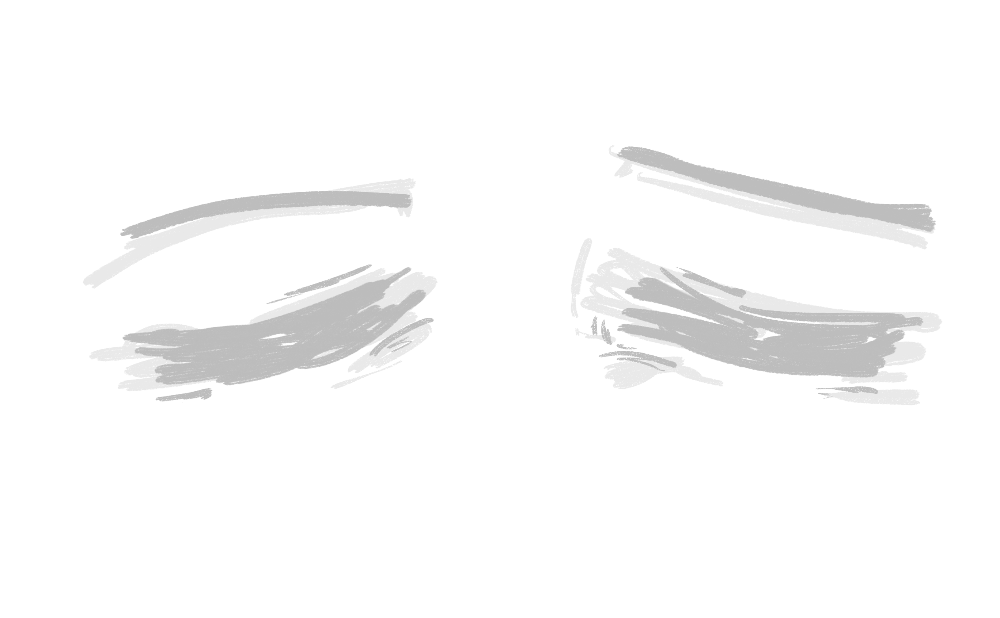
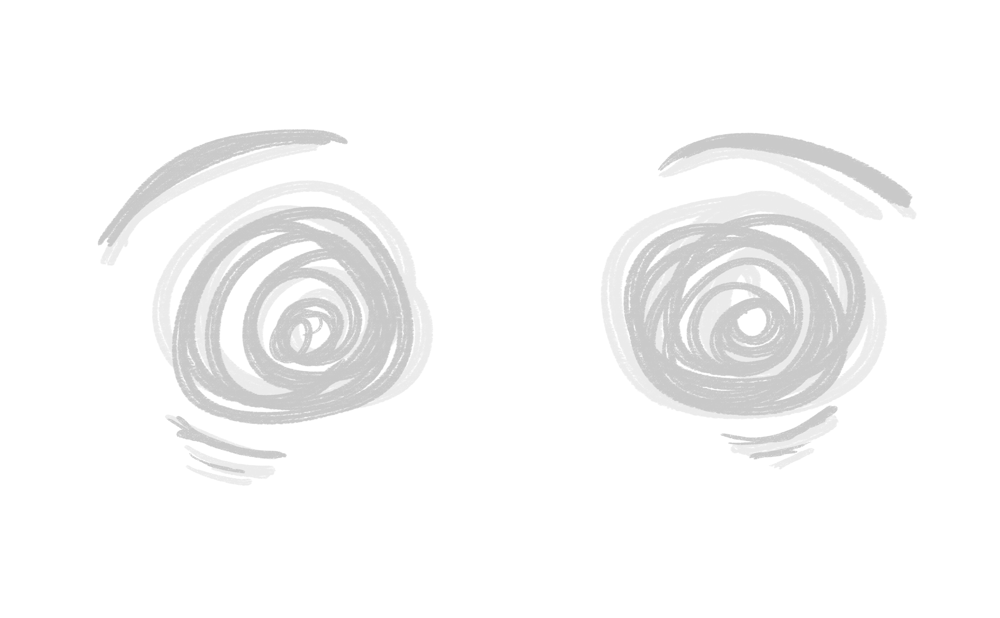
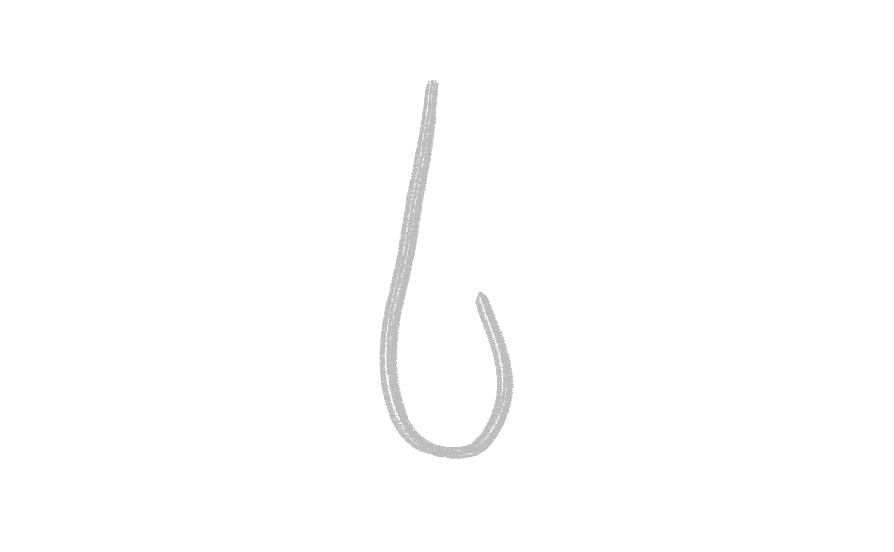
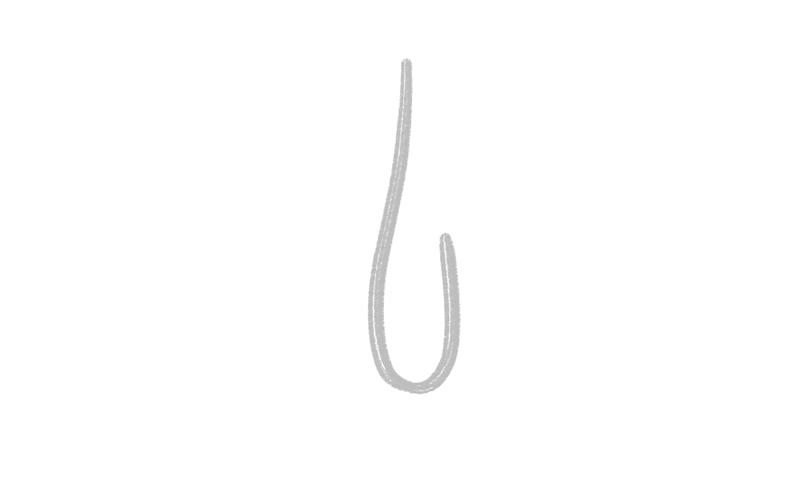
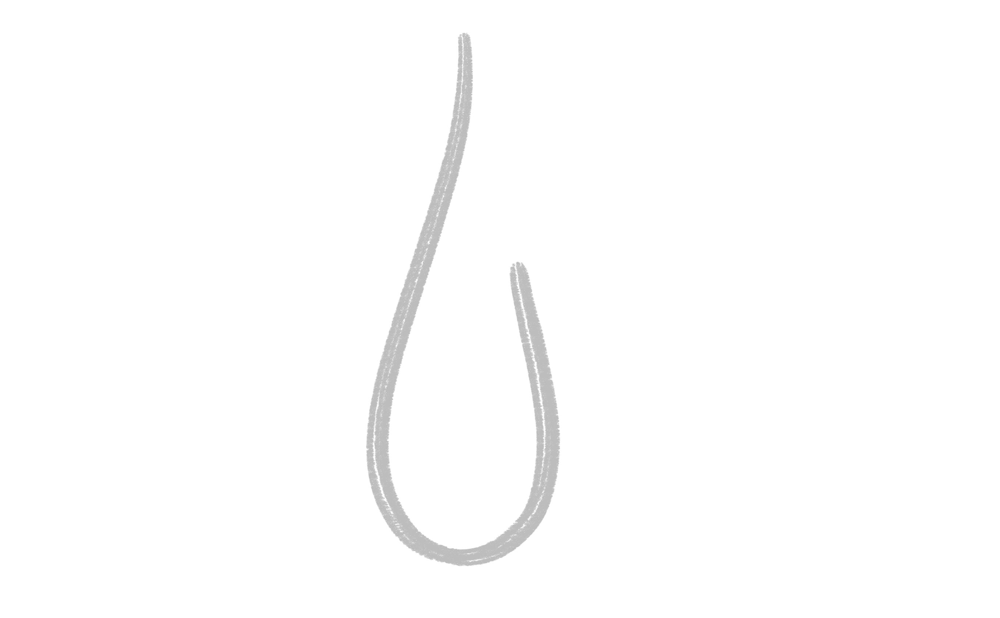
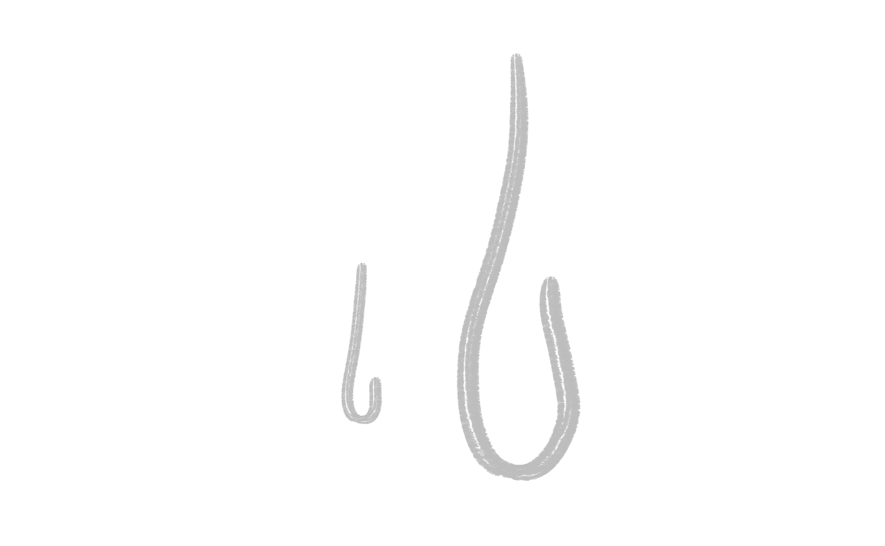
- Animation des gouttes en boucles (translate)
- scrollTrigger
- trigger= chapitre01
- Opacité texte
- Opacité spritesheet yeux
- Opacité spritesheet ghost
- Opacité yeux_ferme
- Opacité gouttes
- Opacité yeux_ouvert
Elle ouvre les yeux, seule dans cet endroit interminable, proie aux monstres qui règnent dans les ombres
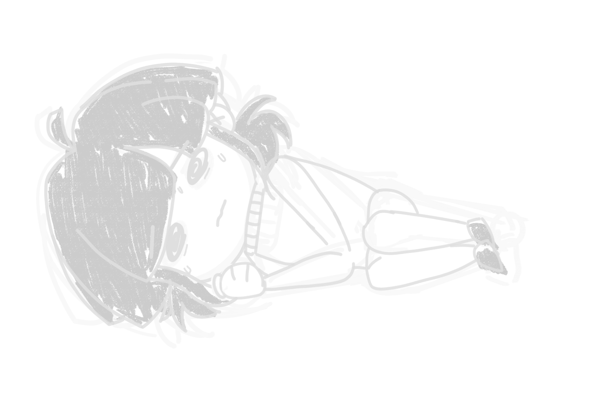 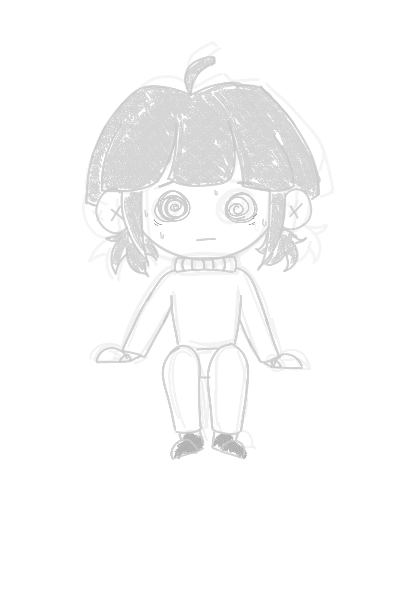 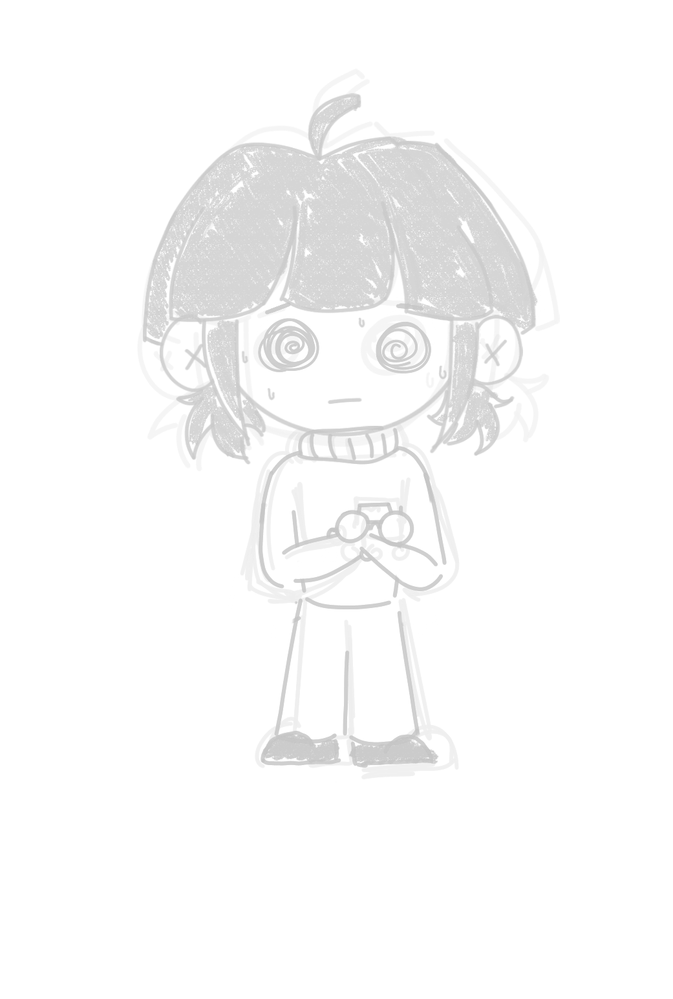 - Animation parallaxe horizontale arriere plan du wagon en boucle
- scrollTrigger
- trigger= chapitre02
- Opacité texte
- Opacité fille couche
- Opacité train
- Opacité fille assise
- Opacité train
- Opacité fille debout
 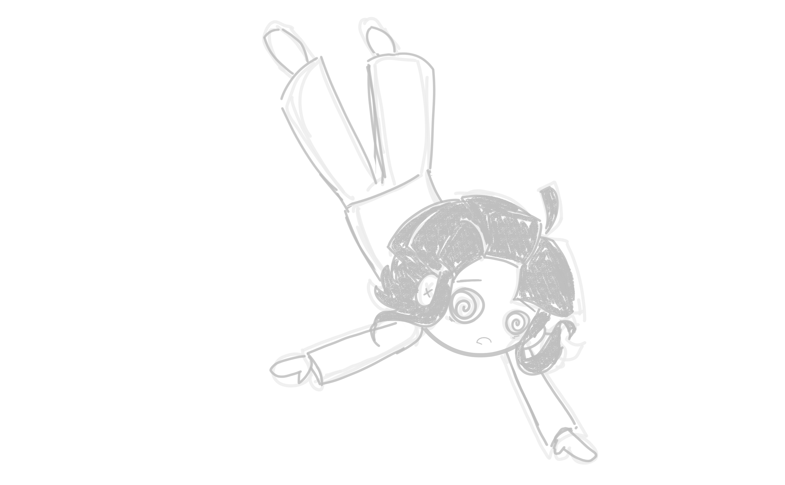
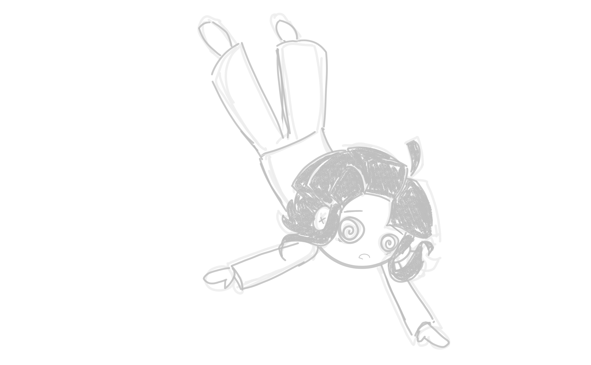
Un murmure sinistre se fait entendre
Un frisson parcourt sa peau, l'effroi prend sa place
Elle chute, descente incessante
- Animation parallaxe horizontale arriere plan du wagon en boucle
- scrollTrigger
- trigger= chapitre03
- Opacité texte
- Opacité fille regarde droite
- Opacité arriere plan
- Opacité porte
- Opacité et aggrandissement fantome
- Opacité texte
- Opacité fille regarde gauche
- Opacité fille debout
- Opacité arriere plan
- Opacité porte
- Opacité et retressissement mains poussent
- Opacité texte
- Opacité arriere plan
- Opacité et rotation fille tombe
- Opacité et rotation train tombe
 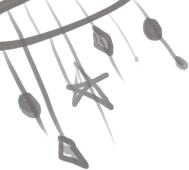
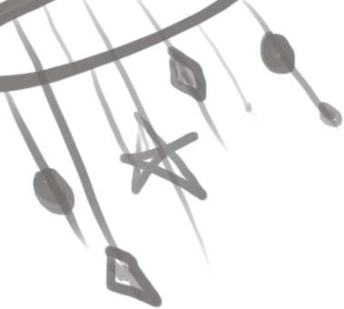
La tombée l'emporte dans la douceur familière de sa chambre d'enfant
Elle se blottit, perdue dans le passé
Des pas résonnent dans les couloirs de sa mémoire
Le monstre la guette, la pourchasse et elle doit fuir
Elle chute, descente incessante
- Animation parallaxe horizontale arriere plan du wagon en boucle
- scrollTrigger
- trigger= chapitre04
- Opacité texte
- Opacité des 3 filles + mère
- Opacité train
- Opacité arriere plan
- Opacité et rotation fille tombe
- Opacité et rotation 4 objets tombe
La tombée l'emporte là où les poissons dansent
Un ballet de reflets apaisants
Mais le monstre la traque toujours, insidieux, agile
- Animation parallaxe horizontale arriere plan du wagon en boucle
- Animation des bulles en boucle (translate)
- scrollTrigger
- trigger= chapitre05
- Opacité bulles
- Opacité texte
- Opacité et motion path baleine
- Opacité et translate poissons
- Opacité des 3 filles + mère
- Opacité train
- Opacité texte
- Opacité rotation et translation 4 bruitages
- Translation spritesheet fille cours
Dans sa course éperdue, son train jouet échappe à sa main
Elle fait volte-face, bravant sa peur, son destin incertain
Mais le monstre surgit, cruel, impitoyable
Et dans ses griffes, elle sombre, une proie vulnérable
- scrollTrigger
- trigger= chapitre06
- Opacité porte
- Opacité et aggrandissement mains
- Opacité texte
- Opacité train
- Opacité et translate main
- Opacité et aggrandissement ghost
- Opacité texte
La quiétude enveloppe l'instant,
Elle contemple le dos de sa mère, comme un réconfort rassurant,
Les souvenirs s'éclairent, chassant l'ombre de la peur,
Elle se souvient, c'est le dernier regard, l'ultime mélancolie
Elle saisit le bras de sa mère,
Comme si ce geste pourrait figer le temps, arrêter leur émoi,
- scrollTrigger
- trigger= chapitre07
- Opacité yeux
- Opacité texte
- Opacité et translation railles, nuage et gazon
- Opacité et translation mère de dos
- Opacité texte
- Opacité et translation bras mère
- Opacité et translation bras fille
- Opacité texte
- Opacité réunion
- Opacité texte
Dans cet instant de douceur, elle serre sa mère contre son cœur,
Une révélation la frappe, dans cette étreinte, dans cette chaleur,
Le monstre qui la traquait, n'était autre que sa mère aimante,
Et dans cette prise de conscience, elle se libère de toute tourmente.
- scrollTrigger
- trigger= chapitre08
- Opacité calin
- Opacité texte
- Opacité train